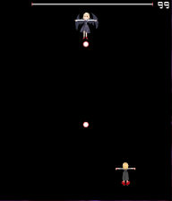
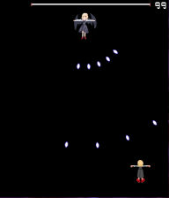
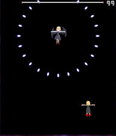
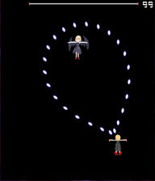
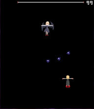
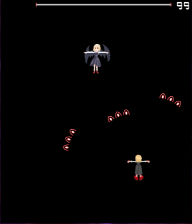
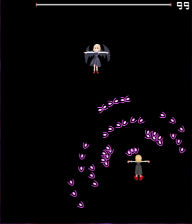

以下で、なるべくコメントを付けながらサンプルを紹介します。
各サンプルはコピーペーストで貼り付けても動作するので、
いろいろ試してみてください。
| SampleA | 弾幕風の組み込み関数のみを用いた弾操作サンプル |
| A01 | 弾を真下に出す |
| A02 | 自機方向へ5WAY |
| A03 | 一定時間で自機方向へ角度を変える弾 |
| A04 | 分裂する弾 |
| A01 弾を真下に出す | |
|  |
弾を真下に出すサンプルです。 60フレーム(1秒)間隔で赤色の弾を真下に向かって出しつづけます。 |
#東方弾幕風[Single] #ScriptVersion[3] #Title["SampleA01"] #Text["SampleA01：弾を真下に出す"] //デフォルト弾画像をロード #include"script/default_system/Default_ShotConst.txt" //---------------------------------------------------- //グローバル変数宣言 //この位置で宣言した変数はスクリプト全体で有効です。 //ただしこの箇所での変数への代入は、定数以外の代入は行えません。 //(実行順序が保障されないため乱数などの使用はできません) //---------------------------------------------------- let objEnemy; //敵オブジェクト let frame = 0; //敵動作に使用するカウンタ(@MainLoopで1づつ増加させます) //---------------------------------------------------- //敵の動作 //---------------------------------------------------- @Event { alternative(GetEventType()) case(EV_REQUEST_LIFE) { //敵ライフを要求された SetScriptResult(500);//ライフを500に設定 } } @Initialize { //敵オブジェクトを生成し登録 objEnemy = ObjEnemy_Create(OBJ_ENEMY_BOSS); ObjEnemy_Regist(objEnemy); //敵画像の設定 let imgExRumia = GetCurrentScriptDirectory ~ "ExRumia.png"; //敵画像ファイル ObjPrim_SetTexture(objEnemy, imgExRumia); //画像ファイルを読み込む ObjSprite2D_SetSourceRect(objEnemy, 64, 1, 127, 64); //描画元矩形を(64,1) - (127,64)に設定 ObjSprite2D_SetDestCenter(objEnemy); //描画先を中心(0, 0)に設定 //座標(cx, 60)へ60フレームかけて移動する let cx = GetStgFrameWidth() / 2;//STGシーンの中心x座標を取得 ObjMove_SetDestAtFrame(objEnemy, cx, 60, 60); } @MainLoop { //敵の座標を取得 let ex = ObjMove_GetX(objEnemy); let ey = ObjMove_GetY(objEnemy); if(frame == 60) { //frameが60になったら実行される部分 //・敵の座標から真下に向かって弾を発射する //・速度：1フレームに3 //・角度：90 (真下) //・遅延時間：30フレーム CreateShotA1(ex, ey, 3, 90, DS_BALL_S_RED, 30); frame = 0;//弾を出したらframeを0にする } //当たり判定登録 ObjEnemy_SetIntersectionCircleToShot(objEnemy, ex, ey, 32);//当たり判定(自機弾用)登録 ObjEnemy_SetIntersectionCircleToPlayer(objEnemy, ex, ey, 24);//当たり判定(体当たり用)登録 //カウンタに1追加 frame++; //ライフ0処理 if(ObjEnemy_GetInfo(objEnemy, INFO_LIFE) <= 0) { //ライフが0になったら即座に終了 //本来は爆発エフェクトのタスクを登録し、 //エフェクト終了を待って、スクリプトを終了します。 Obj_Delete(objEnemy); CloseScript(GetOwnScriptID()); return; } }
| A02 自機方向へ5WAY | |
|  |
自機方向へ5WAYを発射するサンプルです。 60フレーム(1秒)間隔で青色の5WAYを自機へ向かって出しつづけます。 atan2で敵からみた自機方向の角度を計算し、 whileでループして5WAYにしています。 |
#東方弾幕風[Single] #ScriptVersion[3] #Title["SampleA02"] #Text["SampleA02：自機方向へ5WAY"] //デフォルト弾画像をロード #include"script/default_system/Default_ShotConst.txt" //---------------------------------------------------- //グローバル変数宣言 //この位置で宣言した変数はスクリプト全体で有効です。 //ただしこの箇所での変数への代入は、定数以外の代入は行えません。 //(実行順序が保障されないため乱数などの使用はできません) //---------------------------------------------------- let objEnemy; //敵オブジェクト let frame = 0; //敵動作に使用するカウンタ(@MainLoopで1づつ増加させます) //---------------------------------------------------- //敵の動作 //---------------------------------------------------- @Event { alternative(GetEventType()) case(EV_REQUEST_LIFE) { //敵ライフを要求された SetScriptResult(500);//ライフを500に設定 } } @Initialize { //敵オブジェクトを生成し登録 objEnemy = ObjEnemy_Create(OBJ_ENEMY_BOSS); ObjEnemy_Regist(objEnemy); //敵画像の設定 let imgExRumia = GetCurrentScriptDirectory ~ "ExRumia.png"; //敵画像ファイル ObjPrim_SetTexture(objEnemy, imgExRumia); //画像ファイルを読み込む ObjSprite2D_SetSourceRect(objEnemy, 64, 1, 127, 64); //描画元矩形を(64,1) - (127,64)に設定 ObjSprite2D_SetDestCenter(objEnemy); //描画先を中心(0, 0)に設定 //座標(cx, 60)へ60フレームかけて移動する let cx = GetStgFrameWidth() / 2;//STGシーンの中心x座標を取得 ObjMove_SetDestAtFrame(objEnemy, cx, 60, 60); } @MainLoop { //敵の座標を取得 let ex = ObjMove_GetX(objEnemy); let ey = ObjMove_GetY(objEnemy); if(frame == 60) { //frameが60になったら実行される部分 //自機の座標を取得 let px = GetPlayerX(); let py = GetPlayerY(); //敵からみた自機方向の角度を求める。 let angleToPlayer = atan2(py - ey, px - ex); //angleを-30から15ずつ増加させ5WAYにする let angle = -30; while(angle <= 30) {//(angle=-30, -15, 0, 15, 30) //敵の座標から自機に向かって5WAY弾を発射する //速度：1フレームに3 //角度：angle + angleToPlayer //遅延時間：30フレーム CreateShotA1(ex, ey, 3, angle + angleToPlayer, DS_RICE_S_BLUE, 30); angle += 15; } frame = 0;//弾を出したらframeを0にする } //当たり判定登録 ObjEnemy_SetIntersectionCircleToShot(objEnemy, ex, ey, 32);//当たり判定(自機弾用)登録 ObjEnemy_SetIntersectionCircleToPlayer(objEnemy, ex, ey, 24);//当たり判定(体当たり用)登録 //カウンタに1追加 frame++; //ライフ0処理 if(ObjEnemy_GetInfo(objEnemy, INFO_LIFE) <= 0) { //ライフが0になったら即座に終了 //本来は爆発エフェクトのタスクを登録し、 //エフェクト終了を待って、スクリプトを終了します。 Obj_Delete(objEnemy); CloseScript(GetOwnScriptID()); return; } }
| A03 一定時間で自機方向へ角度を変える弾 | ||
|  | → |  |
|
一定時間で自機方向へ角度を変える全方位弾を発射します。 CreateShotで弾を作製し、ObjMove_AddPatternを使うことで、 角度を変化させます。 |
||
#東方弾幕風[Single] #ScriptVersion[3] #Title["SampleA03"] #Text["SampleA03：一定時間で自機方向へ角度を変える弾"] //デフォルト弾画像をロード #include"script/default_system/Default_ShotConst.txt" //---------------------------------------------------- //グローバル変数宣言 //この位置で宣言した変数はスクリプト全体で有効です。 //ただしこの箇所での変数への代入は、定数以外の代入は行えません。 //(実行順序が保障されないため乱数などの使用はできません) //---------------------------------------------------- let objEnemy; //敵オブジェクト let objPlayer; //自機オブジェクト let frame = 0; //敵動作に使用するカウンタ(@MainLoopで1づつ増加させます) //---------------------------------------------------- //敵の動作 //---------------------------------------------------- @Event { alternative(GetEventType()) case(EV_REQUEST_LIFE) { //敵ライフを要求された SetScriptResult(500);//ライフを500に設定 } } @Initialize { //自機オブジェクト取得 objPlayer = GetPlayerObjectID(); //敵オブジェクトを生成し登録 objEnemy = ObjEnemy_Create(OBJ_ENEMY_BOSS); ObjEnemy_Regist(objEnemy); //敵画像の設定 let imgExRumia = GetCurrentScriptDirectory ~ "ExRumia.png"; //敵画像ファイル ObjPrim_SetTexture(objEnemy, imgExRumia); //画像ファイルを読み込む ObjSprite2D_SetSourceRect(objEnemy, 64, 1, 127, 64); //描画元矩形を(64,1) - (127,64)に設定 ObjSprite2D_SetDestCenter(objEnemy); //描画先を中心(0, 0)に設定 //座標(cx, 120)へ60フレームかけて移動する let cx = GetStgFrameWidth() / 2;//STGシーンの中心x座標を取得 ObjMove_SetDestAtFrame(objEnemy, cx, 120, 60); } @MainLoop { //敵の座標を取得 let ex = ObjMove_GetX(objEnemy); let ey = ObjMove_GetY(objEnemy); if(frame == 180) { //frameが180になったら実行される部分 //自機の座標を取得 let px = GetPlayerX(); let py = GetPlayerY(); //敵からみた自機方向の角度を求める。 let angleToPlayer = atan2(py - ey, px - ex); //angleを-30から15ずつ増加させ5WAYにする let angle=0; while(angle<360) {//(angle：15°間隔で0〜360まで) //一定時間で自機方向へ角度を変える弾 //弾を作成する。 let obj = CreateShotA2(ex, ey, 5, angle, -0.10, 1, DS_RICE_S_BLUE, 30); //発射後60フレーム目に、自機方向を基準に角度変更するように設定 ObjMove_AddPatternA4(obj, 60, 3, 0, 0, 0, 3, objPlayer, NO_CHANGE); angle += 15; } frame = 0;//弾を出したらframeを0にする } //当たり判定登録 ObjEnemy_SetIntersectionCircleToShot(objEnemy, ex, ey, 32);//当たり判定(自機弾用)登録 ObjEnemy_SetIntersectionCircleToPlayer(objEnemy, ex, ey, 24);//当たり判定(体当たり用)登録 //カウンタに1追加 frame++; //ライフ0処理 if(ObjEnemy_GetInfo(objEnemy, INFO_LIFE) <= 0) { //ライフが0になったら即座に終了 //本来は爆発エフェクトのタスクを登録し、 //エフェクト終了を待って、スクリプトを終了します。 Obj_Delete(objEnemy); CloseScript(GetOwnScriptID()); return; } }
| A04 分裂する弾 | ||||
|  | → |  | → |  |
|
ObjShot_AddShotを使った分裂する弾です。 自機方向への3WAY(青)が、 それぞれ自機と逆方向への3WAY(赤)に分裂し、 さらに自機方向への5WAY(紫)に分裂します。 |
||||
#東方弾幕風[Single] #ScriptVersion[3] #Title["SampleA04"] #Text["SampleA04：分裂する弾"] //デフォルト弾画像をロード #include"script/default_system/Default_ShotConst.txt" //---------------------------------------------------- //グローバル変数宣言 //この位置で宣言した変数はスクリプト全体で有効です。 //ただしこの箇所での変数への代入は、定数以外の代入は行えません。 //(実行順序が保障されないため乱数などの使用はできません) //---------------------------------------------------- let objEnemy; //敵オブジェクト let objPlayer; //自機オブジェクト let frame = 0; //敵動作に使用するカウンタ(@MainLoopで1づつ増加させます) //---------------------------------------------------- //敵の動作 //---------------------------------------------------- @Event { alternative(GetEventType()) case(EV_REQUEST_LIFE) { //敵ライフを要求された SetScriptResult(500);//ライフを500に設定 } } @Initialize { //自機オブジェクト取得 objPlayer = GetPlayerObjectID(); //敵オブジェクトを生成し登録 objEnemy = ObjEnemy_Create(OBJ_ENEMY_BOSS); ObjEnemy_Regist(objEnemy); //敵画像の設定 let imgExRumia = GetCurrentScriptDirectory ~ "ExRumia.png"; //敵画像ファイル ObjPrim_SetTexture(objEnemy, imgExRumia); //画像ファイルを読み込む ObjSprite2D_SetSourceRect(objEnemy, 64, 1, 127, 64); //描画元矩形を(64,1) - (127,64)に設定 ObjSprite2D_SetDestCenter(objEnemy); //描画先を中心(0, 0)に設定 //座標(cx, 120)へ60フレームかけて移動する let cx = GetStgFrameWidth() / 2;//STGシーンの中心x座標を取得 ObjMove_SetDestAtFrame(objEnemy, cx, 120, 60); } @MainLoop { //敵の座標を取得 let ex = ObjMove_GetX(objEnemy); let ey = ObjMove_GetY(objEnemy); if(frame == 360) { //frameが360になったら実行される部分 //自機の座標を取得 let px = GetPlayerX(); let py = GetPlayerY(); //敵からみた自機方向の角度を求める。 let angleToPlayer = atan2(py - ey, px - ex); //angleを-30から15ずつ増加させ5WAYにする let iAngle = -20; while(iAngle <= 20) {//(iAngle=-20 ,0 ,20)の3WAY //一定時間で自機方向へ角度を変える弾 //弾を作成する。 let obj1 = CreateShotA1(ex, ey, 4, iAngle + angleToPlayer, DS_SCALE_BLUE, 30);//shot1作製 ObjShot_SetDeleteFrame(obj1, 46);//遅延時間後46フレーム目に消滅 let jAngle = -15; while(jAngle <= 15) {//(jAngle=-15 ,0 ,15)の3WAY let obj2 = CreateShotA1(0, 0, 0, 0, DS_SCALE_RED, 10);//shot2作製 ObjMove_AddPatternA4(obj2, 0, 3, jAngle + 180, 0, 0, 3, objPlayer, NO_CHANGE);//自機依存の角度に設定 ObjShot_SetDeleteFrame(obj2, 61);//遅延時間後61フレーム目に消滅 let kAngle = -30; while(kAngle <= 30) {//(kAngle=-30, -15 , 0 , 15, 30)の5WAY let obj3 = CreateShotA1(0, 0, 0, 0, DS_SCALE_PURPLE, 10);//shot3作製 ObjMove_AddPatternA4(obj3, 0, 2, kAngle, 0, 0, 3, objPlayer, NO_CHANGE);//自機依存の角度に設定 ObjShot_AddShotA1(obj2, obj3, 60);// shot2にshot3を追加(60フレームでshot3放出) kAngle += 15; } ObjShot_AddShotA1(obj1, obj2, 45);// shot1にshot2を追加(45フレームでshot2放出) jAngle += 15; } iAngle += 20; } frame = 0;//弾を出したらframeを0にする } //当たり判定登録 ObjEnemy_SetIntersectionCircleToShot(objEnemy, ex, ey, 32);//当たり判定(自機弾用)登録 ObjEnemy_SetIntersectionCircleToPlayer(objEnemy, ex, ey, 24);//当たり判定(体当たり用)登録 //カウンタに1追加 frame++; //ライフ0処理 if(ObjEnemy_GetInfo(objEnemy, INFO_LIFE) <= 0) { //ライフが0になったら即座に終了 //本来は爆発エフェクトのタスクを登録し、 //エフェクト終了を待って、スクリプトを終了します。 Obj_Delete(objEnemy); CloseScript(GetOwnScriptID()); return; } }